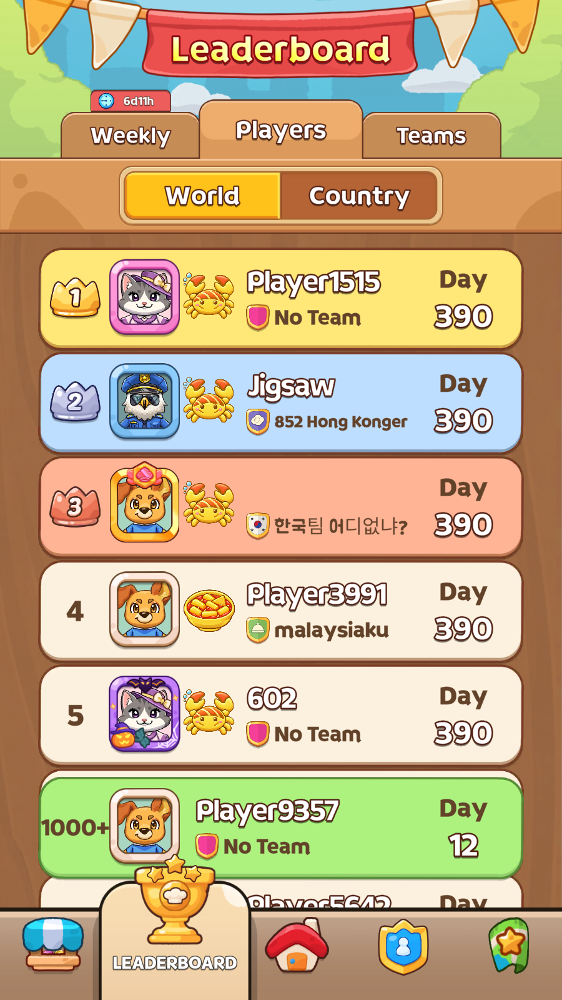
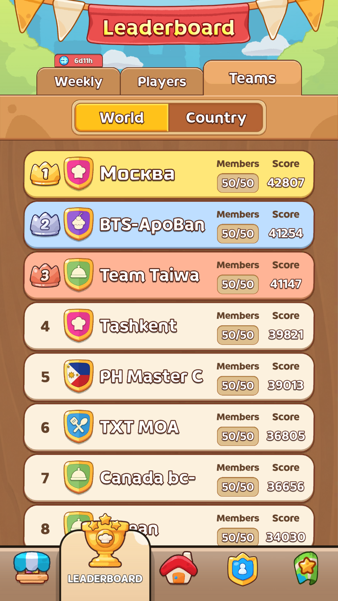

Bảng xếp hạng
Mô tả
- Tab cúp trên Home gom 3 tab con: Weekly (Thi đấu tuần, nhóm 10 người), Players (xếp hạng người chơi Thế giới / Quốc gia) và Teams (xếp hạng đội Thế giới / Quốc gia).
- Điểm xếp hạng người chơi là
rankScore= màn chính x 1 000 000 + màn extra x 10 000 + thắng lần đầu x 1 000 + top 1 tuần x 100. - Tải 100 người mỗi trang, tối đa 1 000, cache 10 phút.
- Mở ở Day 10 (RC
r1plugin_lvunlock_rank); Weekly cũng mở ở Day 10 (r1plugin_lvunlock_weeklycontest). - League: server live 16/11 đã có
league_config(mùa "season-1", 180 màn) nhưng client 1.15 không có lớp League và không đọc key này.
Thiết kế chi tiết
Tóm tắt thiết kế
- Code Xếp hạng người chơi theo
rankScore= màn chính x 1 000 000 + extra x 10 000 + first-try x 1 000 + top 1 tuần x 100: tiến độ dài hạn luôn thắng, các thành tích khác chỉ phá hoà. - Playtest Bảng Players hiện Day 390 ở top 1-5, trong khi người chơi test mới Day 13-20.
- Code Tải 100 người / trang, tối đa 1 000, cache 10 phút; hai bảng Thế giới và Quốc gia gọi song song.
- Playtest Tab Teams có đội đầy 50/50 thành viên, điểm 42 807 ở hạng 1.
- Live 16/11
league_configđã nằm trong Remote Config (season-1, hết 28/11) nhưng client 1.15 không có lớp League: config server có, client chưa dùng. - Code Play Games leaderboard / achievement có hàm nhưng ID rỗng nên không chạy.
Luồng người chơi từng bước
- Mở tab RankNgười chơi PlaytestHiện 3 tab Weekly / Players / Teams, có vòng loading khi tải.

Tab Leaderboard mở ở Weekly: timer 6d11h, banner Weekly Contest, top 3 kèm phần thưởng. - Xem PlayersHệ thống Code2 lệnh
readLdb(thế giới + quốc gia), 100 người đầu rồi tải tiếp nền.
Tab Players: sub-tab World / Country, timer nhỏ, top 1-3 cùng Day 390. - Xem TeamsHệ thống Code
rtccho Thế giới và Quốc gia, hiện số thành viên và điểm.
Tab Teams: Members x/50, hạng 1 Москва 50/50 điểm 42 807. - Bấm vào hồ sơNgười chơi CodeMở
PopupProfilePreviewCtrl(người) hoặcPopupTeamInfoCtrl(đội).


Công thức rankScore (ProfileManager.CalcRankScore)
| Thành phần | Trọng số | Ví dụ save 16/11 |
|---|---|---|
| levelMain | x 1 000 000 | 19 → 19 000 000 |
| levelExtra | x 10 000 | 0 |
| numbFirstTryWin | x 1 000 | 15 → 15 000 |
| weeklyContestTop1 | x 100 | 0 |
| Tổng | 19 015 000 (khớp save) |
Nguồn: ProfileManager.CalcRankScore, ProfileDbModel trong save_end.
league_config live 16/11 (client chưa đọc)
| Trường | Giá trị |
|---|---|
| seasonId | season-1 |
| seasonEnd | 2026-11-28 |
| levels | 180 mục |
| gem | 20 / 40 / 60 |
| gemBonus | 200 |
| cup | 1 / 3 / 5 |
| diffTag | 0, 0, 1, 0, 2 |
Nguồn: frc_activate_20261116.json. Nhãn gem / cup suy luận từ tên.
Vận dụng cho game khác
- Gói mọi thành tích vào một số duy nhất (trọng số 10^6 / 10^4 / 10^3 / 10^2) để server xếp hạng bằng một cột index, không cần join.
- Tách bảng Thế giới và Quốc gia bằng tham số
cctrên cùng một lệnh giúp người chơi thấy mình có cơ hội top ở quy mô nhỏ hơn. - Đẩy config tính năng mới (League) lên Remote Config trước khi phát bản client giúp kiểm thử số liệu mà không lộ UI.
Bảng tổng hợp mọi tính năng đã làm chi tiết: FoodiePop_ThietKeChiTiet.xlsx.
Mở khóa & điểm vào
RC r1plugin_lvunlock_rank mặc định 10 (APK), live 16/11 không ghi đè. Mở khi màn chính đã thắng ≥ 9 (CookOrderBridge.IsHomeTabUnlocked tab Rank). Tab Weekly có điều kiện riêng r1plugin_lvunlock_weeklycontest = 10. Lần mở đầu có popup PopupLeaderboardUnlockCtrl (LeaderboardManager.CheckPlayTutorialUnlock, cờ LeaderboardDbModel.firstOpen).
Điểm vào:
- Tab Rank (prefab HomeTab_Rank) ở thanh dưới Home, icon cúp
- Tab Weekly mở mặc định khi Weekly Contest đã mở khoá
- Bấm một người chơi mở
PopupProfilePreviewCtrl; bấm một đội mởPopupTeamInfoCtrl
Cách hoạt động
- Đủ Day 10 → popup mở khoá lần đầu (
CheckPlayTutorialUnlock),firstOpen = true. - Mở tab Rank:
UILeaderboardCtrl.Initdựng 3 tab con; Weekly được bật nếuWeeklyContestManager.IsUnlocked, Players / Teams nếuLeaderboardManager.IsUnlocked. - Tab Players:
FetchLeaderboardPlayerchờServerID(WaitServerIdReady), lấy mã quốc gia (ProfileManager.EnsureCountryCode), gọi song song 2 lệnhreadLdb(Thế giới cc rỗng + Quốc gia) cho trang đầu 100 người. - Các trang còn lại tải nền (
LoadRemainingPlayerPages,ReadPlayerPage), mỗi trang thử lại tối đa 2 lần, dừng ở 1 000 người; kết quả nối dần quaOnRankPlayerAppended. - Tab Teams:
FetchLeaderboardTeamgọiTeamServer.GetTopTeam(lệnhrtc) cho Thế giới và Quốc gia. - Dữ liệu cache
GlobalRankPlayer/CountryRankPlayer/GlobalRankTeam/CountryRankTeam; không gọi lại trong 600 s (FetchRankCapping). - Dòng của chính mình được ghim / tô nền (Playtest: nền xanh) bằng hạng
rkserver trả.
Ảnh chụp
Bấm ảnh để phóng to, dùng phím ← → để chuyển ảnh. Nhãn màu cho biết nguồn bằng chứng của ảnh.
Phần thưởng
| Ngữ cảnh | Phần thưởng | Evidence |
|---|---|---|
| Xếp hạng Players / Teams | Không có thưởng trong client (chỉ hiển thị) | LeaderboardManager.FetchLeaderboardPlayer |
| League (server config) | gem 20 / 40 / 60, cúp 1 / 3 / 5, gemBonus 200: client 1.15 chưa dùng | RC live `league_config` (Live 16/11); client 1.15 không có lớp League |
Số liệu chính
| Chỉ số | Giá trị | Nguồn |
|---|---|---|
| Cache bảng | 600 s | SOLeaderboardConfig.FetchRankCapping |
| Người chơi tối đa / trang | 1 000 / 100 | SOLeaderboardConfig |
| Day mở | 10 | r1plugin_lvunlock_rank |
| Số tab con | 3 (Weekly, Players, Teams) | UILeaderboardCtrl |
| Số mùa League trên server | 1 (season-1, 180 màn, hết 28/11/2026) | league_config (Live 16/11) |
| Điểm xếp hạng mẫu | 19 015 000 (Day 19, 15 first-try) | ProfileDbModel.rankScore (save 16/11) |
Use case (8)
Bấm vào từng use case để mở. Mở/đóng tất cả
UC-01 Mở khoá tab Rank ở Day 10
Các bướcLeaderboardManager.CheckPlayTutorialUnlockthấy chưafirstOpen- Đặt
firstOpen = true, lưuLeaderboardDbModel, phát callback dữ liệu, mởPopupLeaderboardUnlockCtrl
| Actor | Player |
|---|---|
| Trigger | Thắng màn chính đạt ngưỡng |
| Điều kiện | MainLevelsCompleted ≥ 9 |
| Kết quả | Tab Rank dùng được |
| Quy tắc / số liệu | Dưới ngưỡng, tab Players / Teams hiện chữ khoá LvUnlockRank kèm Day cần thiết (UILeaderboardCtrl.UpdateUIActive). |
| Evidence | LeaderboardManager.CheckPlayTutorialUnlock |
UC-02 Xem bảng người chơi (Thế giới / Quốc gia)
Các bướcLeaderboardManager.FetchLeaderboardPlayer(force)- Nếu cache còn trong 600 s thì dùng lại
ReadPlayerPage(skip 0, limit 100, cc)x2 song songGlobalRankPlayerSelf/CountryRankPlayerSelfnhậnrkcủa mìnhLoadRemainingPlayerPagesnối thêm trang
| Actor | Player |
|---|---|
| Trigger | Bấm tab Players |
| Điều kiện | Đã mở khoá, có ServerID |
| Kết quả | Danh sách cuộn ảo (UILeaderboardTabPlayerCtrl, PlayerRankItemUICtrl) với hạng, tên, avatar, tên đội, Day |
| Quy tắc / số liệu | PlayerPageSize 100, NumbPlayerToShow 1 000, PlayerPageRetry 2. |
| Evidence | LeaderboardManager.FetchLeaderboardPlayer |
UC-03 Xem bảng đội
Các bướcLeaderboardManager.FetchLeaderboardTeam- Đảm bảo có mã quốc gia, gọi
TeamServer.GetTopTeamhai lần (cc rỗng và cc của mình)
| Actor | Player |
|---|---|
| Trigger | Bấm tab Teams |
| Điều kiện | Đã mở khoá |
| Kết quả | Danh sách đội kèm số thành viên x/50 và điểm |
| Quy tắc / số liệu | Cùng giãn cách 600 s. |
| Evidence | LeaderboardManager.FetchLeaderboardTeam |
UC-04 Tab Weekly
Các bướcUILeaderboardTabWeeklyCtrl.UpdateUIActivegiao choWeeklyContestHomeTabUICtrl
| Actor | Player |
|---|---|
| Trigger | Bấm tab Weekly |
| Điều kiện | Weekly Contest mở khoá |
| Kết quả | Bảng nhóm 10 người của tuần |
| Quy tắc / số liệu | Chi tiết ở Thi đấu tuần. |
| Evidence | UILeaderboardTabWeeklyCtrl.UpdateUIActive |
UC-05 Mở hồ sơ người trên bảng
Các bướcPlayerRankItemUICtrl.ViewProfilegọiProfilePopupRouterFacade.Openvới id người đó- Đọc hồ sơ bằng
readPrf, hiệnPopupProfilePreviewCtrl
| Actor | Player |
|---|---|
| Trigger | Bấm một dòng người chơi |
| Điều kiện | Online |
| Kết quả | Xem avatar, khung, huy hiệu, đội, thống kê |
| Quy tắc / số liệu | Chi tiết ở Hồ sơ. |
| Evidence | PlayerRankItemUICtrl.ViewProfile |
UC-06 Chờ ServerID / offline
Các bướcWaitServerIdReadylặp theoApplication.internetReachabilityvàUniTask.WaitForEndOfFramecho đến khi có ID- Mất mạng: giữ cache cũ nếu có, không có thì danh sách trống
| Actor | System |
|---|---|
| Trigger | Mở bảng khi chưa có định danh hoặc mất mạng |
| Điều kiện | — |
| Kết quả | Bảng hiện khi có dữ liệu |
| Quy tắc / số liệu | Phụ thuộc Định danh server. |
| Evidence | LeaderboardManager.WaitServerIdReady |
UC-07 Đẩy điểm xếp hạng lên server
Các bướcProfileManager.SaveRankScoretính lạirankScoreProfileManager.CheckUpdateBaseInfogọiProfileServer.PushProfile(lệnhpushPrf, trườngsc)
| Actor | System |
|---|---|
| Trigger | rankScore đổi |
| Điều kiện | Định danh sẵn sàng, không đang chơi level |
| Kết quả | Bảng Players lấy theo sc của hồ sơ |
| Quy tắc / số liệu | rankScore = levelMain x 1 000 000 + levelExtra x 10 000 + numbFirstTryWin x 1 000 + weeklyContestTop1 x 100. |
| Evidence | ProfileManager.CalcRankScore |
UC-08 League (chưa có trong client)
Các bước- Remote Config live 16/11 có key
league_config(seasonId "season-1", 180 màn, gem 20 / 40 / 60, cup 1 / 3 / 5, seasonEnd 2026-11-28) - Tìm trong mã 1.15: không có lớp League nào và không có chuỗi
league_config
| Actor | Server |
|---|---|
| Trigger | — |
| Điều kiện | — |
| Kết quả | Config server đã có, client 1.15 chưa dùng (Live 16/11) |
| Quy tắc / số liệu | Chỉ ghi nhận, không có hành vi để mô tả. |
| Evidence | LeaderboardManager.FetchLeaderboardPlayer |
Cấu hình (12)
Gộp mọi nguồn: const trong code, giá trị mặc định trong APK, storage key, AB test, cờ server.
| Nguồn | Key | Kiểu | Giá trị | Ý nghĩa | Nơi định nghĩa |
|---|---|---|---|---|---|
| code const | SOLeaderboardConfig.FetchRankCapping | int s | 600 | Cache bảng 10 phút | SOLeaderboardConfig |
| code const | SOLeaderboardConfig.NumbPlayerToShow | int | 1000 | Số người chơi tối đa trên bảng | SOLeaderboardConfig |
| code const | SOLeaderboardConfig.PlayerPageSize | int | 100 | Số người mỗi trang | SOLeaderboardConfig |
| code const | SOLeaderboardConfig.PlayerPageRetry | int | 2 | Số lần thử lại một trang lỗi | SOLeaderboardConfig |
| json default | r1plugin_lvunlock_rank | int | 10 (APK) / không ghi đè (Live 16/11) | Day mở tab Rank | frc_defaults_115.json; GameProgressScenario.get_RankUnlockLevel |
| json default | r1plugin_lvunlock_weeklycontest | int | 10 (APK) / không ghi đè (Live 16/11) | Day mở tab Weekly | frc_defaults_115.json |
| server info | league_config.seasonId | string | season-1 | Mùa League (client chưa đọc) | frc_activate_20261116.json |
| server info | league_config.seasonEnd | string | 2026-11-28 | Ngày kết thúc mùa | frc_activate_20261116.json |
| server info | league_config.gem / gemBonus / cup | list/int | gem [20, 40, 60]; gemBonus 200; cup [1, 3, 5] | Thưởng gem và cúp theo hạng (suy luận từ tên) | frc_activate_20261116.json |
| server info | league_config.levels | string | 180 mục dạng a_b_c (ví dụ 3_46_0) | Danh sách màn của mùa (suy luận: map_level_diff) | frc_activate_20261116.json |
| server info | league_config.diffTag / randomSeed / coinMul / rqMapCount | list/int | [0, 0, 1, 0, 2] / 0 / 0 / 0 | Nhãn độ khó, seed, hệ số xu, số map yêu cầu | frc_activate_20261116.json |
| storage key | LeaderboardDbModel.SaveGameModel | object | fo (firstOpen) | Chỉ cờ lần mở đầu được lưu lên server; bảng là cache runtime | LeaderboardDbModel |
Backend / server
| Command | Chiều | Mục đích |
|---|---|---|
readLdb | client→server (đọc) | Đọc bảng người chơi: command, pjId (id dự án), id (serverId), cc (rỗng = thế giới), skip, limit; trả rk (hạng của mình) + arr (id, name, cc, ava, sc, info, time) |
rtc | client→server (đọc) | Top đội theo quốc gia (TeamServer.GetTopTeam) |
pushPrf | client→server (ghi) | Đẩy sc = rankScore để vào bảng |
Giao diện (UI)
| Element | Class | Mục đích |
|---|---|---|
| Tab Rank (3 tab con) | _GAME.Leaderboard.UILeaderboardCtrl | Weekly / Players / Teams, anim Open / Close |
| Tab Players | _GAME.Leaderboard.UILeaderboardTabPlayerCtrl | World / Country, danh sách cuộn ảo |
| Tab Teams | _GAME.Leaderboard.UILeaderboardTabTeamCtrl | World / Country |
| Tab Weekly | _GAME.Leaderboard.UILeaderboardTabWeeklyCtrl | Nhúng Weekly Contest |
| Dòng người chơi | _GAME.Leaderboard.PlayerRankItemUICtrl | Hạng, tên, avatar, khung, đội, Day |
| Dòng đội | _GAME.Leaderboard.TeamRankItemUICtrl | Cờ, tên, số thành viên, điểm |
| Popup mở khoá | _GAME.Leaderboard.PopupLeaderboardUnlockCtrl | Lần đầu |
Storage keys
LeaderboardDbModel (file R1/f76ArRxN2hoFCCSJ trong save) LeaderboardDbModel.firstOpen
Còn thiếu / chưa xác minh
- League:
league_configcó trên server (Live 16/11) nhưng 1.15 không có lớp League và không đọc key; ý nghĩa các trường là suy luận từ tên. Có thể bản 1.16+ mới dùng. - Play Games leaderboard (
SocialLeaderboard.PushHighScore) và achievement (SocialAchievements.PushAchievementLevel) có code nhưng ID đều là chuỗi rỗng trong 1.15, nên không chạy. - Nội dung cột trong bảng Players (Day, tên đội) lấy từ ảnh; field
infochứa JSON hồ sơ chưa giải hết. - Giá trị
rk(hạng của mình) khi ngoài top 1 000 chưa quan sát.
Tính năng liên quan
Thi đấu tuần (Weekly Contest) Đội (Team) Hồ sơ (avatar, khung, huy hiệu) Định danh server và đồng bộ save Cấu hình từ xa & level author A/B
Nguồn đã đọc
_analysis/code/decompiled/R1Plugins/_GAME.Leaderboard.LeaderboardManager.c_analysis/code/decompiled/R1Plugins/_GAME.Leaderboard.UILeaderboardCtrl.c_analysis/code/stubs/R1Plugins/_GAME.Leaderboard.SOLeaderboardConfig.cs_analysis/code/stubs/R1Plugins/_GAME.Leaderboard.ABIServerReadLeaderBoardModel.csData/remote_config/frc_activate_20261116.json (league_config)_analysis/live/fp_20261116/RESULTS_LIVE.md_analysis/live/fp_20261116/save_end/R1 (LeaderboardDbModel)